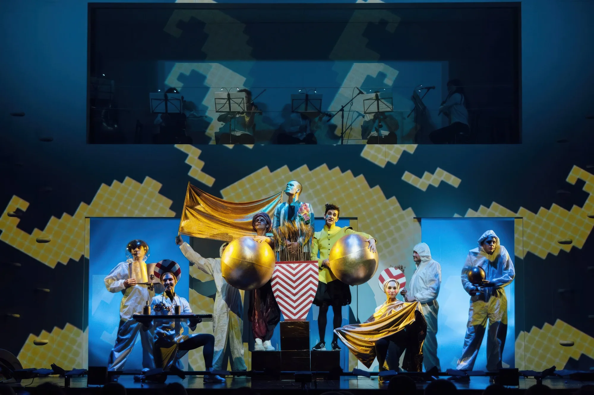

Кандид идёт сквозь абсурд мира
Повесть Вольтера 1759 года пересказана Родионовым и Троепольской — бодро, брутально, без снисхождения. Каждый «уровень» разрушает веру героя в лучшее из миров, и сразу начинается следующий. Болгария, Голландия, Аргентина, Эльдорадо. Финал всегда впереди.